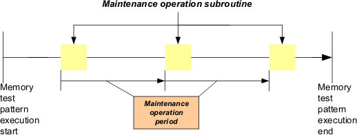
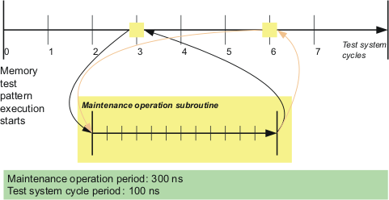
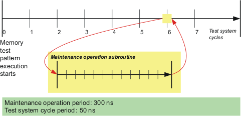

Maintenance operations
Maintenance operations are procedures that need to be performed regularly during the testing of a device, most commonly refreshes.
Maintenance operations consist of a series of vectors (compiled from device accesses and other instructions) to be performed and an interval in which an operation is to occur. With this information, MTP schedules them automatically, avoiding any need for you to insert them manually into your test patterns.
Because maintenance operations can only occur at specific points during a test, MTP provides features to regulate where maintenance operations can and cannot occur and to influence their automated scheduling.

Maintenance operation periods
The maintenance operation period is the desired interval between two executions of the maintenance operation. It is specified using the maintop_time_a keyword for single refresh operations, or the static_maintop_time_x (x can be any given letter) keywords for multiple refreshes operations in the Timing file.
The longest maintenance operation period possible is 9.2 seconds (228 times the test system period). The shortest possible period is 16 times the test system period.
Maintenance operation types
- Single refresh maintenance operation: Use only one refresh during a memory pattern
execution.
Both the static and dynamic timer modes support this type.
The single static refresh maintenance operation supports both single-port and multiport operations.
- Multiple refreshes maintenance operation: Use more than one refresh during a memory pattern
execution. You can switch from one refresh to another refresh but only one refresh is allowed
at any point of the running time of a memory pattern execution.
Only the static timer mode supports this type.
The multiple static refreshes maintenance operation supports both single-port and multiport operations.
For more information on the timer modes, see below "Timer modes: static vs. dynamic refreshes".
Executing maintenance operations
Maintenance operations are triggered by the type of waveform: If the refresh counter reaches zero, the refresh is executed at the next interruptible waveform in the pattern stream. (Interruptible waveforms have an index below 0x80.)
It requires replicated wavetables, that is, wavetables in which each waveform is included twice, once in its normal (interruptible) form and once in its non-interruptible form. This is described in Wavetables for maintenance operations.
You control the execution of refreshes in vector mode by specifying either places where interrupts are possible or parts of the sequence that cannot be interrupted, as described in "Interruptible and non-interruptible sequences", below.
To use the vector mode, specify VEC in the using interruptCtrl statement in the pin mapping file or set the interrupCtrl pin attribute to VEC.
Interruptible and non-interruptible sequences
After the refreshes have been set (see Setting up a maintenance operation) and enabled (see Enabling and disabling maintenance operations), the program can be interrupted at any location. To mark the non-interruptible locations, you can use either nis{} or is{}.
The is{} and nis{} keywords let you indicate to the compiler where maintenance operations may and may not occur in your code:
- Using is{} indicates that the program is not interruptible in general, except in locations marked by the is{} statement. is{} must be empty between the curly braces.
- Using nis{} indicates that the program can be interrupted at any location, except between the statements contained between the curly braces.
One program may contain either is{} or nis{}, but not both. Programs for pins in sequencer mode may contain only is{} instructions. Details on these keywords are available in Other control structures.
Timer modes: static vs. dynamic refreshes
Maintenance operations can be either static or dynamic:
- Static operations are compiled into the pattern. They offer the advantage of being available
between tester cycles but require recompilation every time the maintenance period or interval
setting is changed.
Static maintenance operation are specified by declaring the :timerMode: to be static in the Device architecture file. The information on the timing to be used has to be added to the APG pattern file using the :timing: keyword.
Static mode supports:
- Both the single and multiple refreshes maintenance operations
- Both singel-port and multiport operations.
The static refresh cannot be used together with the accumulated interval mode.
- Dynamic maintenance operations are executed through a hardware counter and are applied by
SmarTest at runtime. They can occur only on tester cycle boundaries but require no
recompilation when the maintenance period or interval settings change.
Dynamic mode supports only the single refresh maintenance operations.
Dynamic mode is not supported with DC Scale card DPS128/64.
Interval modes: compensated vs. accumulated modes
There are two ways in which the test system can handle the counter, which involve differences in finding the desired points in the pattern for executing the maintenance operation:
- Compensated mode: One way is for the system to calculate the desired points by starting from the beginning of the memory pattern and adding the specified maintenance periods. For example, with a maintenance period of 300 ns, the desired execution points would be at 300 ns, 600 ns, 900 ns, and so on, after the beginning of the memory pattern. This is called the compensated interval mode.
- Accumulated mode: The other way is to count the maintenance period from the actual date of
the last maintenance operation. For example, with a maintenance period of 300 ns, the first
maintenance operation is scheduled for 300 ns after the start of the memory pattern. An
uninterruptible sequence may be located at 300 ns, causing the maintenance operation to start
at 380 ns. In this case, the second maintenance operation would start at 680 ns (start of the
first maintenance operation plus maintenance period). This is called the accumulated
mode.
Using the accumulated mode together with static refreshes requires an HSM3G or HSM6800 card.
The interval mode is specified with the :intervalMode: keyword in the device architecture file.
Maintenance operations and DC events
The PMU type of DC events causes the execution of the pattern to be interrupted. These interruptions can take up to 1.3 ms, which may exceed the maximum refresh interval for the DUT.
If you use PMU type DC events, make sure to take this effect into account when writing your patterns.
Examples
Structure example
This example assumes a maintenance operation period taken from the data sheet of a memory device with a maintenance operation period of 300 ns. The test system cycle period is 100 ns. This causes a maintenance operation subroutine to be called on test system cycles 3, 6, ... as shown in the example below.

If the test system cycle period is reduced to 50 ns and the maintenance operation period remains 300 ns long, the maintenance operation subroutine is called on test system cycle number 6 as shown in the example below.

Code example
main ()
{
// write device
for (rowAddr=0 ; rowAddr<rowMax; rowAddr+=1)
{
// no maintenance operation allowed during full device write
is {}
for (colAddr=0 ; colAddr<colMax ; colAddr+=1)
{
write (rowAddr, colAddr, data);
}
}
// read device
for (rowAddr=0 ; rowAddr<rowMax; rowAddr+=1)
{
// no maintenance operation allowed during burst read
// maintenance operation can occur in between bursts
for (colAddr=0 ; colAddr<colMax ; colAddr+=burstLength)
{
is {}
read_burst (rowAddr, colAddr, data);
}
}
}Functional changes
- Introduced before SmarTest 6.3.2
- MTP 3.0.1: New mode for dynamic refresh: sequencer
- MTP 3.0.1: PMU type DC events may prevent timely refreshes
- MTP 3.0.1: Maintenance operation can be enabled and disabled under program control
- MTP 3.0.3: (MTP on SOC 103.0.0) The sequencer mode is now available in both MTP on HSM and MTP on SOC
- MTP 3.1.6: (MTP on SOC 103.3.0) Multiple static refreshes maintenance operation is available in both MTP on HSM and MTP on SOC
- MTP 3.1.6: (MTP on SOC 103.3.0) The static refresh supports multiport operation.
- MTP 3.1.6: (MTP on SOC 103.3.0) New keyword: static_maintop_time_x (x can be any given letter) is added for the multiple refreshes maintenance operation periods.